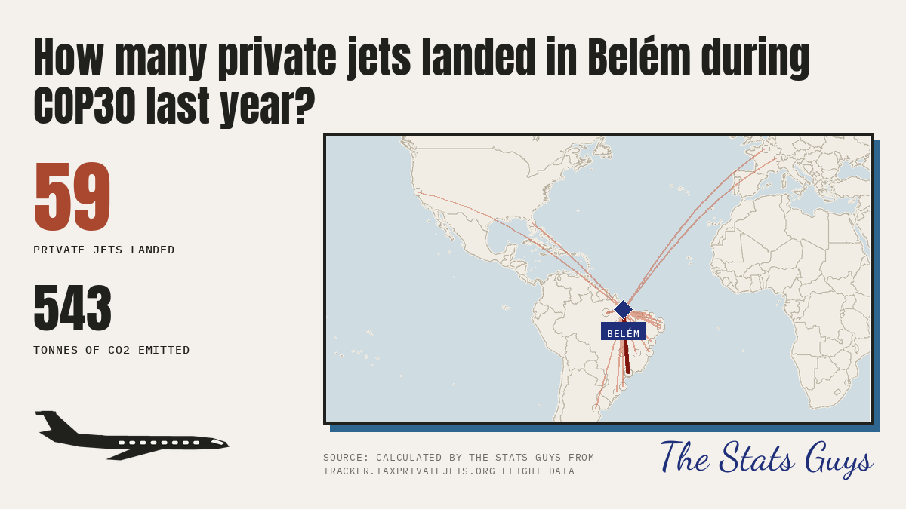
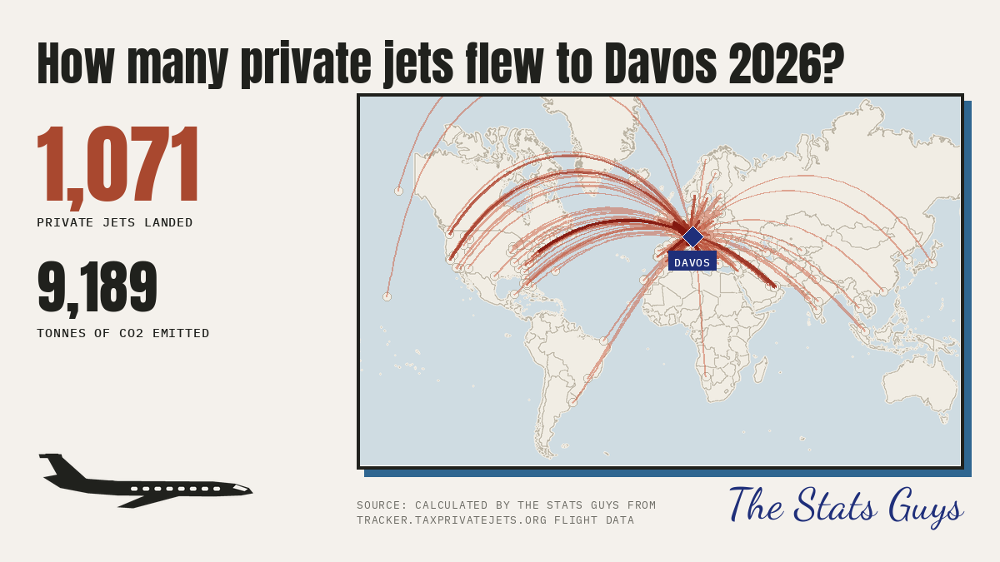
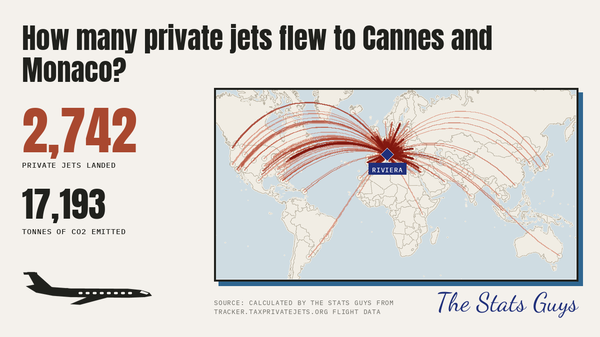
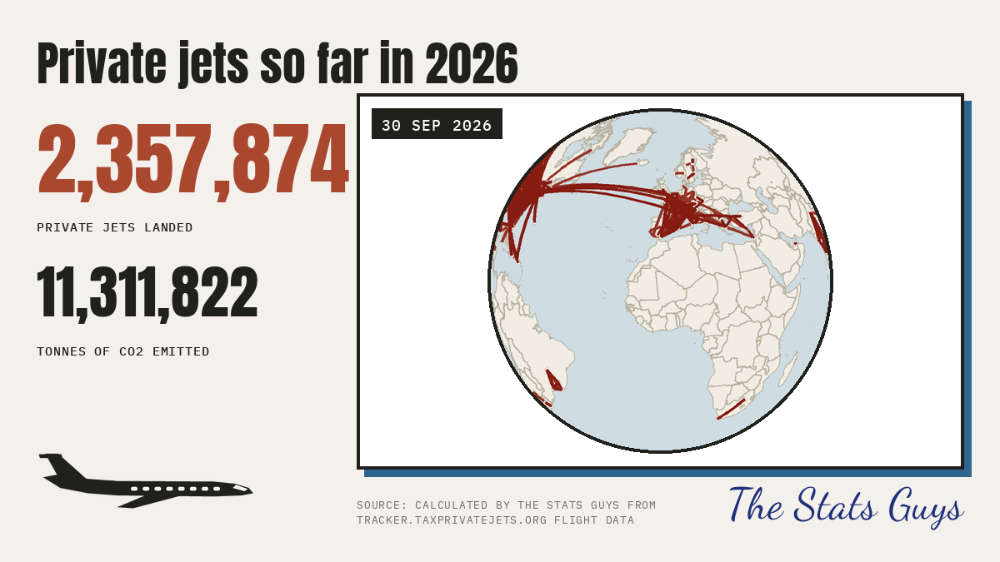
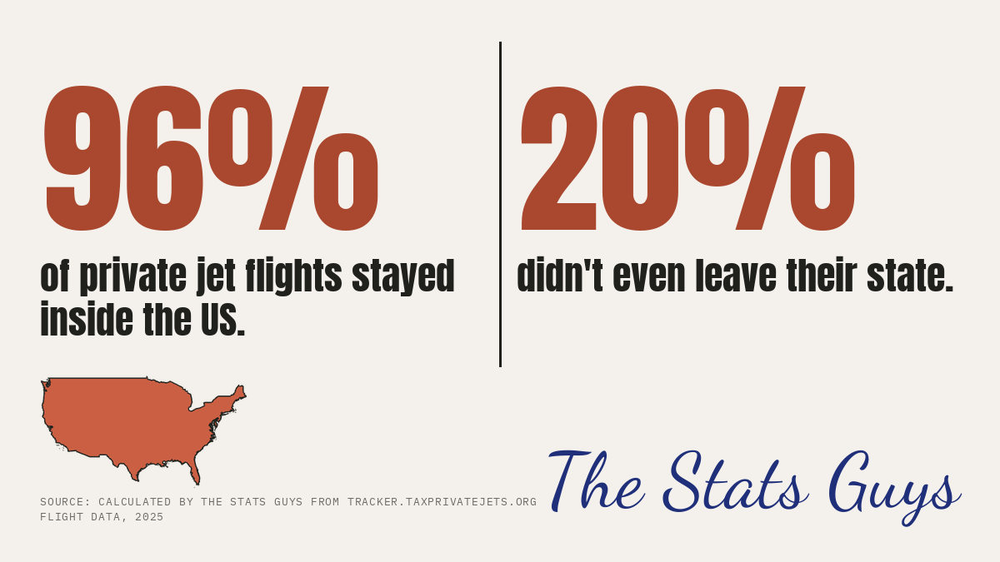
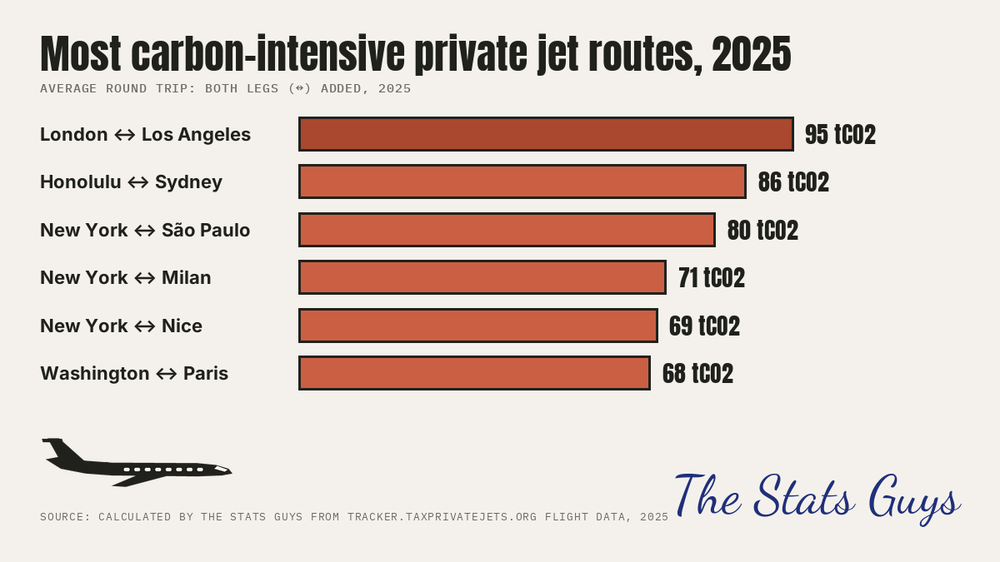
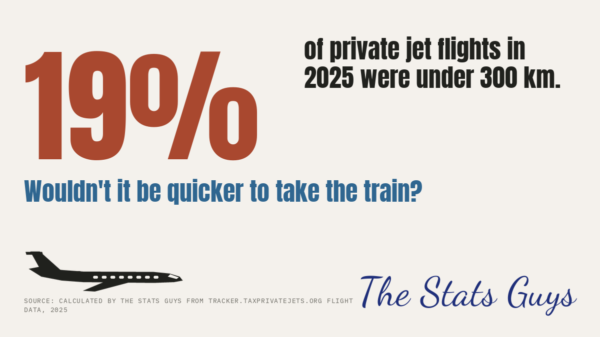
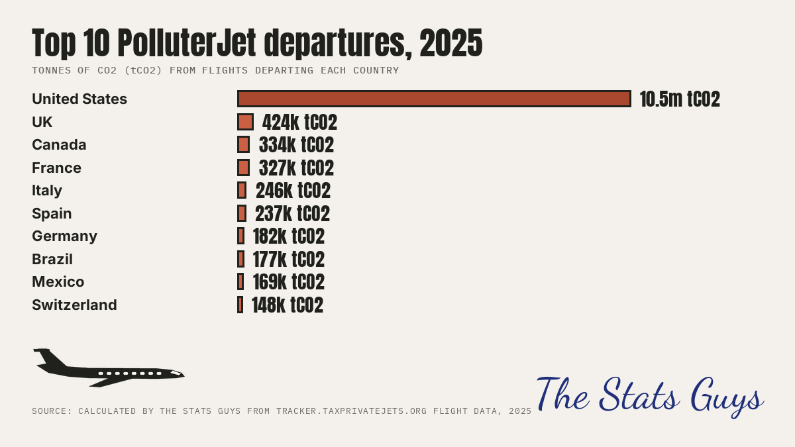
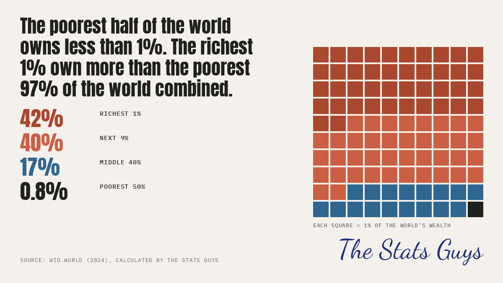
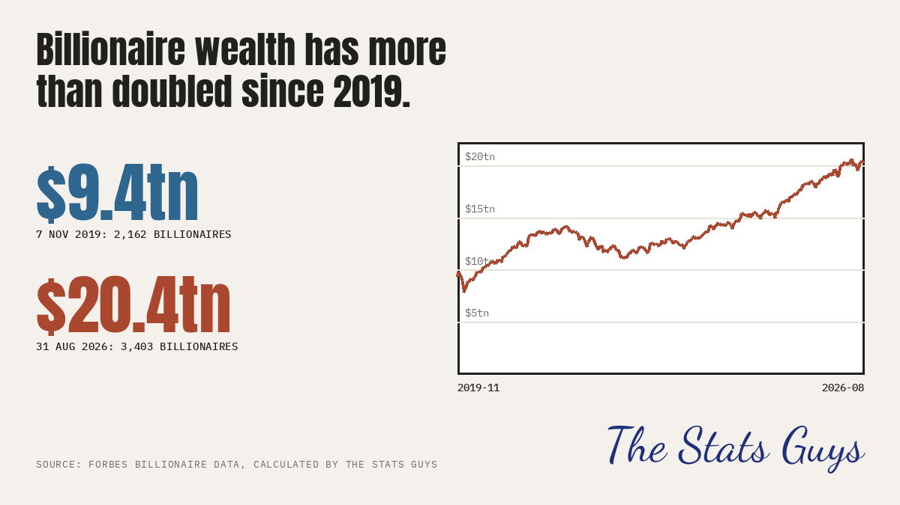

Every statistic we publish is listed here with (1) the raw data to download as CSV, (2) the step-by-step arithmetic, (3) the sources, and (4) the caveats. You should be able to follow each calculation yourself, in a spreadsheet, from the files on this page.
All figures are calculated by The Stats Guys from the sources named under each stat. Flight data are monthly exports of tracker.taxprivatejets.org; there is no public API for them, so the flight rows and tables are provided here as CSV (the full file of 5.6 million flights is too large to host; the tables here are what each calculation needs, and the event sections list every flight).
A flight is a row of the tracker data whose takeoff and landing airports differ. Rows that land where they took off (3.3% of 2025 rows) are left out of every count, because they have no destination. CO2 means tonnes of CO2 from the fuel burned in flight (tank-to-wake); a few rows (0.02% in 2025) have no CO2 value and add nothing to the totals.
Own counts or published figures? Davos, Cannes and Monaco Grand Prix, and COP30 are The Stats Guys' own counts of landings, calculated from tracker.taxprivatejets.org data and compared with the same dates a year earlier. For the World Cup final and the Monaco Yacht Show we use the figures published by Tax Private Jets (Institute for Policy Studies) and cite them. They count different things (takeoffs plus landings, an excess over a 5-year average, CO2e) and use different baselines, so the five events are not directly comparable with each other.
The ranking of the five events is indicative. It orders events by private jets per day and mixes two sources and units: Tax Private Jets' figures (World Cup: takeoffs plus landings; Yacht Show: flights in and out) and The Stats Guys' landings counts (Davos, Cannes and Monaco Grand Prix, COP30). A conversion we made ourselves to put them side by side: about half of takeoffs plus landings, or of flights in and out, are arrivals, so the World Cup is roughly 3,449 / 2 = 1,725 landings and the Yacht Show roughly 1,386 / 2 = 693 landings. This is an assumption, not a Tax Private Jets figure.
Per day (landings, our windows: Davos 8 days, Cannes and Monaco Grand Prix 30 days, COP30 15 days): Davos 134 a day, Cannes and Monaco GP 91 a day, COP30 4 a day. World Cup: about 1,725 landings is 431 a day if Tax Private Jets' window was 4 days, and it stays above Davos (134 a day) for any window up to about 12 days, so it stays first. Yacht Show: about 693 landings is 99 a day over 7 days, and 173 a day over the show's 4 days; either is above Cannes and Monaco GP (91 a day), and over 4 days above Davos too. Tax Private Jets state no dates, so the Yacht Show's place cannot be pinned down: it ranks fourth only if the window was 8 days or longer. COP30 stays last on any basis.
By total landings instead of per day: Cannes and Monaco GP 2,742, World Cup about 1,725, Davos 1,071, Yacht Show about 693, COP30 59. This is a different order from the per-day one, which is why the ranking should be read as indicative only.
COP30, Belém: private jets landing during the summit
49 private jets landed at Belém airport (SBBE) on 10 to 21 Nov 2025, 459 tCO2. The same dates in 2024: 10 jets, 87 tCO2.

1 Raw data (download)
event_cop30_flights.csv69 rows, 7 KB Tracker export rows landing at Belem airport (SBBE): 2025 8 to 22 Nov (this_year) and 10 to 22 Nov 2024 (last_year). Rows are copied from the tracker CSVs in data/cop30.
2 Step by step
Download the four tracker exports for the Belém box (-1.55,-48.60,-1.30,-48.35): 3 to 10 Nov 2025, 10 to 22 Nov 2025, 22 to 29 Nov 2025, and 10 to 22 Nov 2024. Rows are copied unchanged into event_cop30_flights.csv.
Keep rows whose Landing airport is SBBE and whose Takeoff airport is not SBBE; remove any duplicate (registration + landing time).
For 10 to 21 Nov (the summit days) count the rows and add the tCO2e TTW column: 2025 = 49 flights and 459 t; 2024 = 10 flights and 87 t.
The animation runs 8 to 22 Nov 2025 (59 flights); the 8 and 9 Nov build-up days have no 2024 comparison because the 2024 export starts on 10 Nov.
3 Sources
Flights: tracker.taxprivatejets.org exports, business jets, bounding box above (see the link pattern on the Davos entry). Calculated by The Stats Guys.
This export used the tracker's Adapted Travel Impact Model for CO2, while the other events use the EUROCONTROL Fast Model. The two are of similar size (for the same 51 landings: 451 t against 459 t) but not identical, so do not compare COP30's tonnes with the other events' tonnes.
Small numbers: a summit with 49 jets is a handful of flights, not a trend.
The tracker box counts business jets only.
A flight is a row of the tracker data whose takeoff and landing airports differ. Rows that land where they took off (3.3% of 2025 rows) are left out of every count, because they have no destination. CO2 means tonnes of CO2 from the fuel burned in flight (tank-to-wake); a few rows (0.02% in 2025) have no CO2 value and add nothing to the totals.
Davos: World Economic Forum 2026
1,071 private jets landed within 160 km of Davos, 2026-01-17 to 2026-01-24: 9,189 tCO2. The same dates a year earlier: 956 jets, 7,448 tCO2.

1 Raw data (download)
event_davos_flights.csv2,027 rows, 254 KB One row per flight landing within the circle in the window (this_year) and on the same dates one year earlier (last_year).
event_airports.csv46 rows, 4 KB Every airport that counted, with coordinates (OurAirports) and its distance from the event centre.
event_definitions.csv5 rows, 0 KB The circle (centre and radius) and the window used for each event.
2 Step by step
Take every row of the flight data whose landing_time (UTC) falls from 2026-01-17 to 2026-01-24 (two days before the event to the day after) and whose takeoff and landing airports differ.
Keep rows whose landing airport is within the radius of the centre: distance = haversine from the airport's latitude and longitude (OurAirports) to the centre. event_airports.csv lists every airport that counted and its distance.
Count the rows: 1,071. Add the tco2 column: 9,189 t.
Repeat for the same calendar dates one year earlier (rows marked last_year): 956 flights, 7,448 t.
On the graphic the counters grow as each flight's landing time passes; each line is one origin airport to the landing airport, thicker and darker the more flights shared it.
3 Sources
Flights: monthly "Flights CSV" exports of tracker.taxprivatejets.org (no public API; filters sit in the page URL after the #, e.g. https://tracker.taxprivatejets.org/#start=2026-01-19T00:00:00Z&end=2026-01-24T00:00:00Z&aircraft=business_jet&emissions=<method>&wtt=0&mode=flights&bbox=<minlat>,<minlon>,<maxlat>,<maxlon>; downloading the CSV needs a free login). Emissions: EUROCONTROL Fast Model, in-flight fuel only (tank-to-wake), well-to-tank switched off. Calculated by The Stats Guys.
A flight is a row of the tracker data whose takeoff and landing airports differ. Rows that land where they took off (3.3% of 2025 rows) are left out of every count, because they have no destination. CO2 means tonnes of CO2 from the fuel burned in flight (tank-to-wake); a few rows (0.02% in 2025) have no CO2 value and add nothing to the totals.
Landings are counted at every airport in the circle, so they include everyone who flew there, not only people attending the event. We do not know who was aboard or why.
The 160 km circle takes in Zurich, St. Gallen, Friedrichshafen and Milan Linate, so many of these flights are for other reasons.
World Cup final 2026, New York New Jersey
Tax Private Jets reported 3,449 private jet takeoffs and landings at local airports around the final, and 13.36 kilotons of CO2 above the 5-year average for NY/NJ-area airports, "64% above the baseline for similar windows over the past 5 years" (their figures, not ours).
1 Raw data (download)
event_worldcup_flights.csv3,559 rows, 468 KB One row per flight landing within the circle in the window (this_year) and on the same dates one year earlier (last_year).
tax_private_jets_published_figures.csv5 rows, 2 KB The figures Tax Private Jets published for the World Cup final and the Monaco Yacht Show, copied as published (quoted inputs, not recalculated).
2 Step by step
These are quoted figures: nothing was recalculated. Source: Tax Private Jets (Institute for Policy Studies) World Cup media advisory, 16 Jul 2026, final update 23 Jul 2026.
What is counted: takeoffs plus landings (a flight that arrives and leaves counts twice), not landings only. The CO2 figure is the excess above a 5-year average for NY/NJ-area airports (13.36 kilotons = 13,360 tonnes), not total emissions.
Their advisory does not state the length of the window or how the 5-year average was calculated.
Their Google Doc press release could not be opened by us; the figures come from the advisory text and taxprivatejets.org.
For transparency, event_worldcup_flights.csv holds our own landings-only count for 2026-07-17 to 2026-07-20 within 90 km of MetLife Stadium: 2,051 landings and 14,827 tCO2 (against 1,508 landings on the same dates a year earlier). It is a different measure and is not used as the headline.
Date of the final: Wikipedia (19 Jul 2026, MetLife Stadium).
4 Caveats and limits
Tax Private Jets' figures use takeoffs plus landings and an excess over a 5-year average; The Stats Guys' other events count landings against the same dates last year. Do not compare the numbers across events.
Because the window and the 5-year-average method are not published, we cannot check or reproduce these figures.
Monaco Yacht Show 2026
Tax Private Jets reported 1,386 private jet flights into and out of the region during the show and 12,246 tons of CO2e (their figures, not ours).
1 Raw data (download)
event_yachts_flights.csv1,185 rows, 148 KB One row per flight landing within the circle in the window (this_year) and on the same dates one year earlier (last_year).
These are quoted figures: nothing was recalculated. Source: Tax Private Jets (Institute for Policy Studies) Monaco Yacht Show press release, as summarised on taxprivatejets.org.
What is counted: flights into and out of the region (both directions), with emissions as CO2e. They state no dates and no baseline.
Their Google Doc press release could not be opened by us; the figures come from the summary on taxprivatejets.org.
For transparency, event_yachts_flights.csv holds our own landings-only count for 2026-09-21 to 2026-09-27 within 90 km of Monaco: 607 landings and 3,651 tCO2 (against 578 landings on the same dates a year earlier). It is a different measure and is not used as the headline.
Date: Monaco Yacht Show (23 to 26 Sep 2026; one listing says 24 to 27).
4 Caveats and limits
Tax Private Jets' figures count flights in both directions and use CO2e; The Stats Guys' other events count landings in CO2. Do not compare the numbers across events.
No dates or baseline are published, so we cannot say how this compares with a normal week or reproduce the figures.
Cannes Film Festival and Monaco Grand Prix 2026
2,742 private jets landed within 90 km of Nice (43.66, 7.20), 2026-05-10 to 2026-06-08: 17,193 tCO2. The same dates a year earlier: 2,563 jets, 14,927 tCO2.

1 Raw data (download)
event_riviera_flights.csv5,305 rows, 663 KB One row per flight landing within the circle in the window (this_year) and on the same dates one year earlier (last_year).
event_airports.csv46 rows, 4 KB Every airport that counted, with coordinates (OurAirports) and its distance from the event centre.
event_definitions.csv5 rows, 0 KB The circle (centre and radius) and the window used for each event.
2 Step by step
Take every row of the flight data whose landing_time (UTC) falls from 2026-05-10 to 2026-06-08 (two days before the event to the day after) and whose takeoff and landing airports differ.
Keep rows whose landing airport is within the radius of the centre: distance = haversine from the airport's latitude and longitude (OurAirports) to the centre. event_airports.csv lists every airport that counted and its distance.
Count the rows: 2,742. Add the tco2 column: 17,193 t.
Repeat for the same calendar dates one year earlier (rows marked last_year): 2,563 flights, 14,927 t.
On the graphic the counters grow as each flight's landing time passes; each line is one origin airport to the landing airport, thicker and darker the more flights shared it.
3 Sources
Flights: monthly "Flights CSV" exports of tracker.taxprivatejets.org (no public API; filters sit in the page URL after the #, e.g. https://tracker.taxprivatejets.org/#start=2026-01-19T00:00:00Z&end=2026-01-24T00:00:00Z&aircraft=business_jet&emissions=<method>&wtt=0&mode=flights&bbox=<minlat>,<minlon>,<maxlat>,<maxlon>; downloading the CSV needs a free login). Emissions: EUROCONTROL Fast Model, in-flight fuel only (tank-to-wake), well-to-tank switched off. Calculated by The Stats Guys.
A flight is a row of the tracker data whose takeoff and landing airports differ. Rows that land where they took off (3.3% of 2025 rows) are left out of every count, because they have no destination. CO2 means tonnes of CO2 from the fuel burned in flight (tank-to-wake); a few rows (0.02% in 2025) have no CO2 value and add nothing to the totals.
Landings are counted at every airport in the circle, so they include everyone who flew there, not only people attending the event. We do not know who was aboard or why.
The window is 10 May to 8 Jun, four weeks, so it also holds ordinary early-summer traffic: use the previous-year comparison, not the raw count.
The globe: private-jet flights Jan to Sep 2026
2,357,874 flights landed between 1 Jan and 30 Sep 2026, emitting 11,311,822 tCO2 (11.31 million tonnes).

1 Raw data (download)
world_daily_2026.csv273 rows, 8 KB Flights per day of landing, 1 Jan to 30 Sep 2026 (UTC), with tonnes of CO2.
world_routes_2026.csv9,421 rows, 591 KB Every airport pair with 40 or more flights (all directions counted separately) Jan to Sep 2026. The globe draws the 2,500 busiest.
2 Step by step
Take every row with a landing time from 1 Jan to 30 Sep 2026 (UTC) whose takeoff and landing airports differ.
Count rows per day (world_daily_2026.csv) and add the tCO2 column: 2,357,874 flights, 11,311,822 t over 273 days.
Routes: group the same rows by origin and destination airport and keep pairs with 40 or more flights (world_routes_2026.csv): 9,421 routes. The globe draws the 2,500 busiest as great-circle arcs.
The line thickness and the counters increase as the globe turns; that is for effect, the totals above are the data.
3 Sources
Flights: monthly "Flights CSV" exports of tracker.taxprivatejets.org (no public API; filters sit in the page URL after the #, e.g. https://tracker.taxprivatejets.org/#start=2026-01-19T00:00:00Z&end=2026-01-24T00:00:00Z&aircraft=business_jet&emissions=<method>&wtt=0&mode=flights&bbox=<minlat>,<minlon>,<maxlat>,<maxlon>; downloading the CSV needs a free login). Emissions: EUROCONTROL Fast Model, in-flight fuel only (tank-to-wake), well-to-tank switched off. Calculated by The Stats Guys.
The spin and the gradual thickening of lines are animation, not the order in which flights happened (only the counters follow the real daily totals).
Routes with fewer than 40 flights are not drawn: the routes drawn from the 40+ list carry 40% of all flights.
A flight is a row of the tracker data whose takeoff and landing airports differ. Rows that land where they took off (3.3% of 2025 rows) are left out of every count, because they have no destination. CO2 means tonnes of CO2 from the fuel burned in flight (tank-to-wake); a few rows (0.02% in 2025) have no CO2 value and add nothing to the totals.
Private jet flights that stay in the US
96% of private-jet flights leaving the US in 2025 landed in the US; 20% landed in the same state they took off from.

1 Raw data (download)
us_departures_2025_by_state.csv51 rows, 1 KB 2025 flights leaving the US (takeoff and landing airport different), by state of takeoff.
Take 2025 rows whose takeoff country is the US and whose takeoff and landing airports differ: 2,318,182 flights.
Of those, landing country US: 2,220,575 (95.79%). Landing state equal to takeoff state: 474,316 (20.46%).
Sum the columns of us_departures_2025_by_state.csv to get the same figures.
3 Sources
Flights: monthly "Flights CSV" exports of tracker.taxprivatejets.org (no public API; filters sit in the page URL after the #, e.g. https://tracker.taxprivatejets.org/#start=2026-01-19T00:00:00Z&end=2026-01-24T00:00:00Z&aircraft=business_jet&emissions=<method>&wtt=0&mode=flights&bbox=<minlat>,<minlon>,<maxlat>,<maxlon>; downloading the CSV needs a free login). Emissions: EUROCONTROL Fast Model, in-flight fuel only (tank-to-wake), well-to-tank switched off. Calculated by The Stats Guys.
Loops (56,789 US rows landing where they took off) are excluded; including them the figures would be about 96% and 22%.
State comes from the airport's region code; a handful of rows have none and count as not 'same state'.
Flights that land in US territories (Puerto Rico, Guam) count as not in the US because the data labels them with their own country code.
A flight is a row of the tracker data whose takeoff and landing airports differ. Rows that land where they took off (3.3% of 2025 rows) are left out of every count, because they have no destination. CO2 means tonnes of CO2 from the fuel burned in flight (tank-to-wake); a few rows (0.02% in 2025) have no CO2 value and add nothing to the totals.
The most carbon-intensive private jet routes
Average round trip: EGGW ↔ KLAX: 95 tCO2, then PHNL↔YSSY 86, KTEB↔SBJH 80, KTEB↔LIML 71.

1 Raw data (download)
route_pairs_2025.csv4,405 rows, 285 KB Every airport pair with at least 50 flights in EACH direction in 2025, ranked by round trip (the two one-way means added).
2 Step by step
Take 2025 flights (takeoff and landing airports differ) with a CO2 value. Group by origin and destination airport; keep pairs with at least 50 flights in each direction.
For each pair, mean tCO2 per flight A to B plus mean tCO2 per flight B to A = round trip. Rank by round trip (route_pairs_2025.csv).
Airport codes are ICAO (e.g. KTEB Teterboro, EGGW London Luton); the graphic uses the nearest big city's name.
3 Sources
Flights: monthly "Flights CSV" exports of tracker.taxprivatejets.org (no public API; filters sit in the page URL after the #, e.g. https://tracker.taxprivatejets.org/#start=2026-01-19T00:00:00Z&end=2026-01-24T00:00:00Z&aircraft=business_jet&emissions=<method>&wtt=0&mode=flights&bbox=<minlat>,<minlon>,<maxlat>,<maxlon>; downloading the CSV needs a free login). Emissions: EUROCONTROL Fast Model, in-flight fuel only (tank-to-wake), well-to-tank switched off. Calculated by The Stats Guys.
'Round trip' adds the two one-way averages; it is not one aircraft's actual return flight.
Needs 50+ flights each way, so rarely flown but very long routes are not ranked.
Fuel burn is modelled from aircraft type and distance, not measured.
A flight is a row of the tracker data whose takeoff and landing airports differ. Rows that land where they took off (3.3% of 2025 rows) are left out of every count, because they have no destination. CO2 means tonnes of CO2 from the fuel burned in flight (tank-to-wake); a few rows (0.02% in 2025) have no CO2 value and add nothing to the totals.
Short private jet flights
19% of 2025 private-jet flights were under 300 km (582,289 of 3,040,466).

1 Raw data (download)
distance_bands_2025.csv8 rows, 0 KB 2025 flights (takeoff and landing airport different) by great-circle distance band.
2 Step by step
Take 2025 rows whose takeoff and landing airports differ: 3,040,466.
Count those with great-circle distance under 300 km: 582,289 (19.15%); under 500 km: 1,074,720 (35.3%).
Check with distance_bands_2025.csv (first three rows).
3 Sources
Flights: monthly "Flights CSV" exports of tracker.taxprivatejets.org (no public API; filters sit in the page URL after the #, e.g. https://tracker.taxprivatejets.org/#start=2026-01-19T00:00:00Z&end=2026-01-24T00:00:00Z&aircraft=business_jet&emissions=<method>&wtt=0&mode=flights&bbox=<minlat>,<minlon>,<maxlat>,<maxlon>; downloading the CSV needs a free login). Emissions: EUROCONTROL Fast Model, in-flight fuel only (tank-to-wake), well-to-tank switched off. Calculated by The Stats Guys.
Loops (103,426 rows) are excluded; with them the share would read 21.8%, but they have no journey to compare with a train.
A short flight is not always replaceable by train: some routes have no rail link. The graphic asks a question, it does not claim every flight could go by train.
Distance is as recorded in the source data (great-circle, not flight path).
A flight is a row of the tracker data whose takeoff and landing airports differ. Rows that land where they took off (3.3% of 2025 rows) are left out of every count, because they have no destination. CO2 means tonnes of CO2 from the fuel burned in flight (tank-to-wake); a few rows (0.02% in 2025) have no CO2 value and add nothing to the totals.
Private jet emissions by country of departure, 2025
The US accounts for 72% of 2025 private-jet CO2 (10,484,299 of 14,661,340 t) by country of takeoff.

Country
Flights
tCO2
US
2,374,971
10,484,299
GB
66,931
423,942
CA
71,239
333,634
FR
66,556
326,972
IT
51,189
245,507
ES
43,008
236,726
DE
55,618
182,165
BR
43,007
176,769
MX
39,696
169,002
CH
31,936
148,208
1 Raw data (download)
departures_by_country_2025.csv179 rows, 3 KB 2025, every flight (including loops, which burn real fuel) by country of takeoff, with tonnes of CO2.
2 Step by step
Take every 2025 row (loops included: they burn real fuel).
Group by takeoff country and add tCO2 (departures_by_country_2025.csv); rank; the top 10 are drawn.
The total of all countries is 14,661,340 t over 3,143,892 flights.
3 Sources
Flights: monthly "Flights CSV" exports of tracker.taxprivatejets.org (no public API; filters sit in the page URL after the #, e.g. https://tracker.taxprivatejets.org/#start=2026-01-19T00:00:00Z&end=2026-01-24T00:00:00Z&aircraft=business_jet&emissions=<method>&wtt=0&mode=flights&bbox=<minlat>,<minlon>,<maxlat>,<maxlon>; downloading the CSV needs a free login). Emissions: EUROCONTROL Fast Model, in-flight fuel only (tank-to-wake), well-to-tank switched off. Calculated by The Stats Guys.
Counted by where the flight starts, not by where the owner lives.
Emissions are modelled from aircraft type and flight time.
Flights with no CO2 value are in the flight count but add no tonnes (see the column in the CSV).
World wealth: who owns it
The poorest half of the world owns 0.8% of its wealth; the richest 1% own 42% and the richest 10% own 82% (2024).

1 Raw data (download)
wid_world_wealth_shares_2024.csv387 rows, 16 KB Every percentile group WID.world publishes for the world in 2024 (share of the total held by the group; p99p100 = the richest 1%).
2 Step by step
Open wid_world_wealth_shares_2024.csv. Each row is a percentile group and the share of world net personal wealth it holds.
Poorest 97% = row p0p97: 40.22%. The richest 1% hold more than the poorest 97% combined (42.32% against 40.22%).
Next 9% = richest 10% minus richest 1% = 39.60%. The graphic gives each group a number of squares out of 100 (largest-remainder rounding, so the squares add up to exactly 100).
3 Sources
Data: WID.world (World Inequality Database), world, 2024, net personal wealth of adults (variable shwealj992, entity WO-MER). WID publishes bulk files at wid.world/data; there is no per-query API, so the full list of percentile groups is in the CSV. Calculated by The Stats Guys.
4 Caveats and limits
Wealth data are estimates built from surveys, tax and national accounts; for many countries the top is estimated, not observed.
Shares are of net wealth (assets minus debts), so the poorest groups can hold zero or negative wealth.
World figures use market exchange rates (the share does not change with the exchange-rate basis chosen here).
Billionaire wealth since 2019
Combined billionaire wealth rose from $9.38 trillion (2,162 billionaires, 7 Nov 2019) to $20.43 trillion (3,403, 31 Aug 2026): 2.18 times.

1 Raw data (download)
billionaires_daily_totals.csv2,310 rows, 86 KB Daily count and combined net worth of the world's billionaires (Forbes real-time list), 7 Nov 2019 to 31 Aug 2026.
2 Step by step
Open billionaires_daily_totals.csv: one row per day, the number of billionaires and their combined net worth in US dollars.
7 Nov 2019: 2,162 people, $9,378,242,154,000. 31 Aug 2026: 3,403 people, $20,428,094,778,000.
Data: Forbes real-time billionaires list, daily totals from 7 Nov 2019 (forbes.com/real-time-billionaires; no free API, so the daily totals are in the CSV). Calculated by The Stats Guys.
4 Caveats and limits
Dollars are not adjusted for inflation: US prices rose over the period, so the real increase is smaller than the nominal one.
The list changes as Forbes adds and removes people, so part of the rise is new entrants.
We show totals only, never names.
Jet versus train, door to door
Six short routes, timed with Google Maps for Friday 30 Oct 2026, 16:00:
jet_pair_flights.csv15,328 rows, 1,146 KB Every tracked flight between each route's two airports, both directions, Jan 2025 to Sep 2026.
2 Step by step
Train: Google Maps transit directions from the start point to the destination, departing Fri 30 Oct 2026 16:00 (the first or fastest rail option, link in the table). Add every walking and in-vehicle leg; ignore waiting (we presume the trains line up perfectly). Add 5 minutes to reach the platform on domestic trains, 15 minutes check-in for international trains (Eurostar).
Jet: Google Maps driving time from the start to the departure airport (departing 16:00) + 30 min check-in (international) or 15 min (domestic) + the median flight time between the two airports in the tracked flights (jet_pair_flights.csv) + 15 min to leave the plane and reach the car + Google Maps driving time to the destination, departing at the arrival time.
The faster journey wins; the table shows the difference in minutes. Every leg and every link is in train_vs_jet_legs.csv.
3 Sources
Journeys: Google Maps; each timed leg has its own link (open it and read the minutes). The date and time are part of the link.
Flight times: the tracked flights between the two airports (tracker.taxprivatejets.org). Calculated by The Stats Guys.
4 Caveats and limits
Google Maps reads the time in the link as the local clock at the start. Traffic and timetables for a future Friday are Google's typical values and can change.
Start and end points are one city-centre point each; the real door-to-door time depends on where you actually start.
The Eurostar check-in and platform times are our allowances, not measured figures; the jet check-in and leaving-the-plane times are also the Stats Guys' rules.